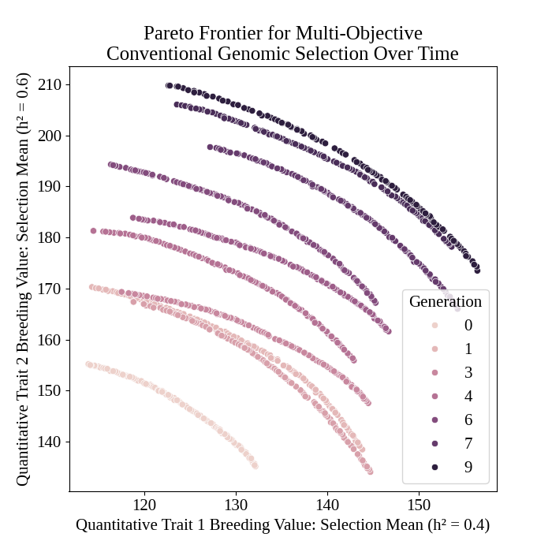
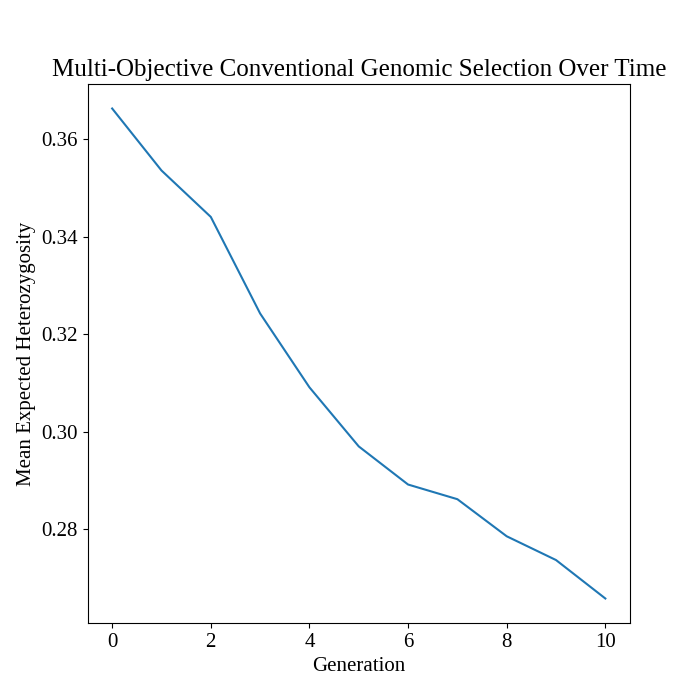
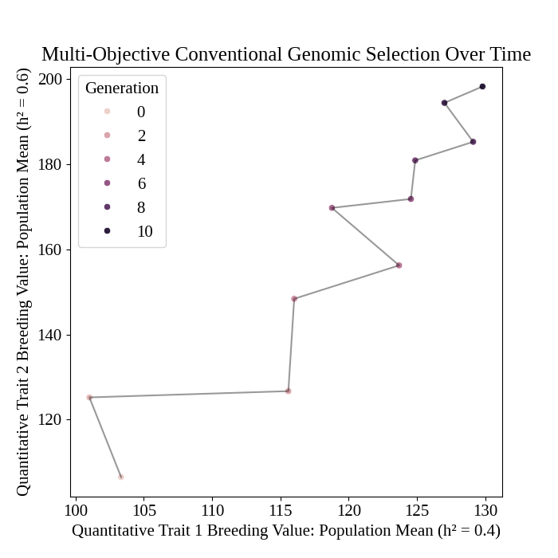

Multi-objective Genomic Selection#
In this example, we demonstrate a simulation where we select individuals based on two traits. Instead of selecting individuals using an index-type selection method, we approximate the Pareto frontier for the selection of two traits simultaneously and select a single solution from this Pareto frontier to determine our final selection decision. The advantage of approximating a Pareto frontier is that it allows us to see our selection options and it allows us to identify selection solutions which lie along non-convex frontiers. The existence of non-convex frontiers is especially important in discrete optimization problems, such as where we desire to select a discrete subset of individuals. In non-convex scenarios, index-type selection methods such as the weight-sum method will fail to identify individuals which lie along the concave portions of a non-convex Pareto frontier.
Simulation Preliminaries#
Loading Required Modules and Seeding the global PRNG#
To begin, we import the various modules we will be used into the Python namespace. We also set the seed for our simulation so that we can replicate the results at a later time.
import numpy
import pandas
import pybrops
from pybrops.breed.arch.RecurrentSelectionBreedingProgram import RecurrentSelectionBreedingProgram
from pybrops.breed.op.eval.EvaluationOperator import EvaluationOperator
from pybrops.breed.op.init.InitializationOperator import InitializationOperator
from pybrops.breed.op.log.Logbook import Logbook
from pybrops.breed.op.mate.MatingOperator import MatingOperator
from pybrops.breed.op.psel.ParentSelectionOperator import ParentSelectionOperator
from pybrops.breed.op.ssel.SurvivorSelectionOperator import SurvivorSelectionOperator
from pybrops.breed.prot.bv.MeanPhenotypicBreedingValue import MeanPhenotypicBreedingValue
from pybrops.breed.prot.gt.DenseUnphasedGenotyping import DenseUnphasedGenotyping
from pybrops.breed.prot.mate.MatingProtocol import MatingProtocol
from pybrops.breed.prot.mate.TwoWayCross import TwoWayCross
from pybrops.breed.prot.mate.TwoWayDHCross import TwoWayDHCross
from pybrops.breed.prot.pt.G_E_Phenotyping import G_E_Phenotyping
from pybrops.breed.prot.sel.EstimatedBreedingValueSelection import EstimatedBreedingValueSubsetSelection
from pybrops.breed.prot.sel.GenomicEstimatedBreedingValueSelection import GenomicEstimatedBreedingValueSubsetSelection
from pybrops.breed.prot.sel.transfn import trans_ndpt_to_vec_dist
from pybrops.model.gmod.DenseAdditiveLinearGenomicModel import DenseAdditiveLinearGenomicModel
from pybrops.popgen.bvmat.DenseBreedingValueMatrix import DenseBreedingValueMatrix
from pybrops.popgen.gmap.HaldaneMapFunction import HaldaneMapFunction
from pybrops.popgen.gmap.StandardGeneticMap import StandardGeneticMap
from pybrops.popgen.gmat.DenseGenotypeMatrix import DenseGenotypeMatrix
from pybrops.popgen.gmat.DensePhasedGenotypeMatrix import DensePhasedGenotypeMatrix
# seed python ``random`` and ``numpy.random`` simultaneously for reproducability
pybrops.core.random.prng.seed(17320132226)
Simulation Parameters#
Next, we define a couple of simulation parameter constants. These constants include the number of founders, number of QTL to simulate, number of burn-in generations, and number of generations for which to conduct simulations.
nfndr = 40 # number of random founders to select
nqtl = 1000 # number of QTL
qlen = 6 # breeding pipeline queue length
ncross = 20 # number of cross configurations (20, 2-way crosses)
nparent = 2 # number of parents per cross configuration (2-way crosses)
nmating = 1 # number of times to perform cross configuration
nprogeny = 80 # number of progenies per cross attempt
nrandmate = 10 # number of random intermatings prior to burn-in step
nburnin = 10 # number of burnin generations
ngen = 10 # number of simulation generations
nrep = 1 # number of simulation replications
fndr_heritability = numpy.array([0.4, 0.6]) # heritability of founder lines
t_cur = -nburnin # current time for burn-in
t_max = 0 # maximum time for burn-in
nindiv_fam = 4 # number of individuals to select per family for within-family selection
nmating_fam = 1 # number of times to perform cross configuration for within-family selection
nprogeny_fam = 80 # number of progenies to generate for within-family selection
Loading Genetic Map Data from a Text File#
Then, we load genetic map data from a CSV-like file. In this example, we are using the US NAM genetic map constructed by McMullen et al. in 2009. We create a StandardGeneticMap object using the from_csv class method.
# read genetic map from a CSV-like file
gmap = StandardGeneticMap.from_csv(
"McMullen_2009_US_NAM.gmap",
vrnt_chrgrp_col = "chr", # name of marker chromosome number column
vrnt_phypos_col = "pos", # name of marker physical position column
vrnt_genpos_col = "cM", # name of marker genetic position column
vrnt_genpos_units = "cM", # units of the genetic position column (cM, M)
auto_group = True, # whether to auto group chromosomes on load
auto_build_spline = True, # whether to auto build interpolation spline on load
sep = "\t", # separator for file format
header = 0, # index of the header row
)
Creating a Genetic Map Function#
After loading our genetic map data, we create a genetic map function object which will be used to calculate recombination probabilities for our simulations. We create a simple Haldane genetic map function using the HaldaneMapFunction class.
# use Haldane map function to calculate crossover probabilities
gmapfn = HaldaneMapFunction()
Loading Genome Data from a VCF File#
Next, we load genetic marker data into PyBrOpS from a VCF file. We treat the file as being phased and create a DensePhasedGenotypeMatrix object from the VCF. In this example, we are using a subset of genetic markers from the Wisconsin Maize Diversity Panel, which is composed of 942 individuals. 2000 SNPs with a minor allele frequency greater than 0.2 have been randomly selected to keep the dataset small.
# read phased genetic markers from a vcf file
fndr_pgmat = DensePhasedGenotypeMatrix.from_vcf(
"widiv_2000SNPs_q0.2_Q0.8.vcf.gz", # file name to load
auto_group_vrnt = True, # automatically sort and group variants
)
After loading the genetic markers, we interpolate the genetic map positions and the sequential marker crossover probabilities using the interp_xoprob method. We interpolate using the genetic map and genetic map function we have just created.
# interpolate genetic map positions
fndr_pgmat.interp_xoprob(gmap, gmapfn)
Sampling founders and markers from the loaded VCF file#
Then, we’ll randomly sample 40 founders and 1000 markers from the genotypic data we have loaded.
# get indices of random selections
# randomly choose ``nfounder`` indices from ``ntaxa``
sel = numpy.random.choice(fndr_pgmat.ntaxa, nfndr, replace=False)
# select founder individuals
fndr_pgmat = fndr_pgmat.select_taxa(sel)
# get indices of random markers
# randomly choose ``nqtl`` indices from ``nvrnt``
sel = numpy.random.choice(fndr_pgmat.nvrnt, nqtl, replace=False)
# select markers
fndr_pgmat = fndr_pgmat.select_vrnt(sel)
Constructing a Bi-Trait Genomic Model#
Next, we want to construct a true genomic model that will model two traits in negative covariance (pleiotropy) with a strictly additive genetic architecture. We construct a DenseAdditiveLinearGenomicModel object to do this.
# create trait means (intercepts) for model
beta = numpy.array([[10.0, 25.0]], dtype = float)
# create marker effects from MVN distribution for model:
# 1) marker effects have mean zero
# 2) marker effects have a covariance structure with negative marker covariance
# meaning that markers are pleiotropic and competing in nature.
# marker effect matrix is shape (nvrnt,2)
mkreffect = numpy.random.multivariate_normal(
mean = numpy.array([0.0, 0.0]),
cov = numpy.array([
[ 1.0, -0.4],
[-0.4, 1.0]
]),
size = fndr_pgmat.nvrnt
)
# create trait names for model:
trait = numpy.array(["syn1","syn2"], dtype = object)
# create the true genomic model
algmod_true = DenseAdditiveLinearGenomicModel(
beta = beta, # model intercepts
u_misc = None, # miscellaneous random effects
u_a = mkreffect, # random marker effects
trait = trait, # trait names
)
Constructing the Founder Population#
In this next series of steps, we’ll create a founder population by randomly intermating 40 selected founders for 10 generations. Following random intermating, we’ll create 6 cohorts of doubled haploid individuals, each cohort representing progenies produced in a single year. In this simulation, the oldest 3 cohorts will be aggregated into a "main" population to serve as selection candidates. The youngest 3 cohorts will be “in the pipeline” and will represent doubled haploid progenies which are being made. From the "main" population, the top 5% of individuals from each family will be selected to form a "cand" population. It is from this "cand" population that parents will be selected. The burn-in segment of the breeding program will proceed for 10 generations. After this point is reached, the simulated populations are ready for use in the main simulation.
Randomly Intermate founders for nrandmate Generations#
First, we start by randomly intermating our 40 founders for 10 generations. We randomly intermate in the heterozygous state, generating one progeny per cross to maximize the number of recombinations between founder chromosomes.
# create 2-way cross object
mate2way = TwoWayCross()
# randomly select and pair founders
xconfig = numpy.random.choice(nfndr, nfndr, replace = False)
xconfig = xconfig.reshape(nfndr // 2, 2)
# randomly intermate ``nfndr`` founders to create initial hybrids
fndr_pgmat = mate2way.mate(
pgmat = fndr_pgmat,
xconfig = xconfig,
nmating = nmating,
nprogeny = nprogeny,
)
# randomly intermate for ``nrandmate`` generations
# each individual in the population is randomly mated with another individual
# and creates a single progeny so that the population size is held constant
for gen in range(1,nrandmate+1):
# randomly select and pair ``ntaxa`` parents
ntaxa = fndr_pgmat.ntaxa
xconfig = numpy.empty((ntaxa,2), dtype = int)
xconfig[:,0] = numpy.random.choice(ntaxa, ntaxa, replace = False)
xconfig[:,1] = numpy.random.choice(ntaxa, ntaxa, replace = False)
# randomly intermate ``ntaxa`` parents
fndr_pgmat = mate2way.mate(
pgmat = fndr_pgmat,
xconfig = xconfig,
nmating = 1,
nprogeny = 1,
)
Construct bootstrap cohort structure to begin burnin#
Create Mating Protocols for Burn-In#
Next, we make a 2-way DH cross protocol for our burn-in stage.
# create a 2-way DH cross object
mate2waydh = TwoWayDHCross()
Create Genotyping Protocols for Burn-In#
We also create a genotyping protocol that converts phased genotypes to unphased genotypes.
# create a genotyping protocol
gtprot = DenseUnphasedGenotyping()
Create Phenotyping Protocols for Burn-In#
To simulate phenotypes, we create a simple \(G+E\) phenotyping protocol that phenotypes individuals in 4 locations, 1 replication each location. We use the founding population we have just created with random mating to set the narrow sense heritability at the single plot level to 0.4 and 0.6 for our traits.
# create a phenotyping protocol using the true genomic model
ptprot = G_E_Phenotyping(algmod_true, 4, 1)
# set the heritability using the founder population
ptprot.set_h2(numpy.array([0.4, 0.6]), fndr_pgmat)
Create Breeing Value Estimation Protocols for Burn-In#
Next, we create a breeding value estimation protocol that uses simple means to estimate breeding value.
# create a breeding value estimation protocol
bvprot = MeanPhenotypicBreedingValue("taxa", "taxa_grp", trait)
Create a Within-Family Selection Helper Function#
We create a function to the best select individuals within their respective families. Since we have two traits we are selecting on, we select on a simple sum of their breeding values.
# define function to do within family selection based on yield
def within_family_selection(bvmat: DenseBreedingValueMatrix, nindiv: int) -> numpy.ndarray:
"""
Select individuals within a family based on the sum of their breeding values.
Parameters
----------
bvmat : DenseBreedingValueMatrix
Input breeding value matrix from which to calculate values.
nindiv : int
Number of individuals to select from each family.
Returns
-------
indices : numpy.ndarray
An array of array indices indicating which individuals are to be selected.
"""
order = numpy.arange(bvmat.ntaxa)
value = bvmat.mat.sum(1)
indices = []
groups = numpy.unique(bvmat.taxa_grp)
for group in groups:
mask = bvmat.taxa_grp == group
tmp_order = order[mask]
tmp_value = value[mask]
value_argsort = tmp_value.argsort()
ix = value_argsort[::-1][:nindiv]
indices.append(tmp_order[ix])
indices = numpy.concatenate(indices)
return indices
Create a Cohort Construction Helper function#
We define a function to help us construct population cohorts for our simulation.
# define a helper function to help make cohorts of individuals
def cohort(
mateprot: MatingProtocol,
fndr_pgmat: DensePhasedGenotypeMatrix,
ncross: int,
nparent: int,
nmating: int,
nprogeny: int
) -> DensePhasedGenotypeMatrix:
"""
Randomly sample individuals from a founder population
"""
# sample indicies of individuals and reshape for input into mating protocol
xconfix = numpy.random.choice(fndr_pgmat.ntaxa, ncross * nparent, replace = False)
xconfig = xconfix.reshape(ncross, nparent)
# mate individuals
out = mateprot.mate(fndr_pgmat, xconfig, nmating, nprogeny)
return out
Create Cohort Structure#
In this next step, we create a bootstrap cohort structure to satisfy the simulation description above.
################ Build founder populations #################
fndr_genome = {"cand":None, "main":None, "queue":[]}
fndr_geno = {"cand":None, "main":None, "queue":[]}
fndr_pheno = {"cand":None, "main":None}
fndr_bval = {"cand":None, "main":None}
fndr_gmod = {"cand":algmod_true, "main":algmod_true, "true":algmod_true}
# fill queue with cohort genomes derived from randomly mating the founders
fndr_genome["queue"] = [cohort(mate2waydh, fndr_pgmat, ncross, nparent, nmating, nprogeny) for _ in range(qlen)]
# construct the main population genomes from the first three cohorts in the queue
fndr_genome["main"] = DensePhasedGenotypeMatrix.concat_taxa(fndr_genome["queue"][0:3])
# genotype individuals to fill the genotyping queue
fndr_geno["queue"] = [gtprot.genotype(genome) for genome in fndr_genome["queue"]]
# construct the main population genotypes from the first three cohorts in the queue
fndr_geno["main"] = DenseGenotypeMatrix.concat_taxa(fndr_geno["queue"][0:3])
# phenotype the main population
fndr_pheno["main"] = ptprot.phenotype(fndr_genome["main"])
# calculate breeding values for the main population
fndr_bval["main"] = bvprot.estimate(fndr_pheno["main"], fndr_geno["main"])
# # calculate indices for within family selection to get parental candidates
ix = within_family_selection(fndr_bval["main"], nindiv_fam) # select top 5%
# # select parental candidates
fndr_genome["cand"] = fndr_genome["main"].select_taxa(ix)
fndr_geno["cand"] = fndr_geno["main"].select_taxa(ix)
fndr_bval["cand"] = fndr_bval["main"].select_taxa(ix) # breeding values have been recentered and rescaled
Define breeding program operators#
In this section, we define several breeding program operators which will be used in the universal breeding program algorithm.
Define parent selection operator for initialization operator#
We define the parent selection operator for the initialization operator. This operator selects parents using a 50/50 weighting of both traits based on the normalized Pareto frontier.
class MyInitParentSelectionOperator(ParentSelectionOperator):
"""
Custom Parent Selection Operator class for our custom Initialization Operator
"""
def __init__(self):
# create parental selection protocol that selects individuals based on
# their estimated breeding values; this is phenotypic selection
self.pselprot = EstimatedBreedingValueSubsetSelection(
ntrait = 2,
unscale = True,
ncross = 20,
nparent = 2,
nmating = 1,
nprogeny = 80,
nobj = 2,
ndset_wt = 1.0,
ndset_trans = trans_ndpt_to_vec_dist,
ndset_trans_kwargs = {
"objfn_wt": numpy.array([1.0, 1.0]), # all objectives maximizing
"wt": numpy.array([0.5, 0.5]) # 1/2; equal weight to all
},
)
def pselect(self, genome, geno, pheno, bval, gmod, t_cur, t_max, miscout, **kwargs):
mcfg = {}
mcfg["cand"] = self.pselprot.select(
pgmat = genome["cand"],
gmat = geno["cand"],
ptdf = pheno["cand"],
bvmat = bval["cand"],
gpmod = gmod["cand"],
t_cur = t_cur,
t_max = t_max,
miscout = miscout
)
return mcfg, genome, geno, pheno, bval, gmod
Define mating operator for initialization operator#
We define the mating operator for the initialization operator. This operator simply creates DH progenies from 2-way crosses.
class MyInitMatingOperator(MatingOperator):
def __init__(self, pcnt, fcnt, **kwargs):
super(MyInitMatingOperator, self).__init__(**kwargs)
self.mprot = TwoWayDHCross(
progeny_counter = pcnt,
family_counter = fcnt
)
def mate(self, mcfg, genome, geno, pheno, bval, gmod, t_cur, t_max, miscout = None, **kwargs):
progeny = self.mprot.mate(
pgmat = mcfg["cand"].pgmat,
xconfig = mcfg["cand"].xconfig,
nmating = mcfg["cand"].nmating,
nprogeny = mcfg["cand"].nprogeny,
miscout = miscout,
nself = 0,
)
genome["queue"].append(progeny) # add progeny to queue in genome dict
return genome, geno, pheno, bval, gmod
Define evaluation operator for initialization operator#
We define the evaluation operator for the initialization operator. Genotypes individuals, tests them in 4 locations, and calculates breeding values using the mean.
class MyInitEvaluationOperator(EvaluationOperator):
def __init__(self, gpmod, var_err, **kwargs):
self.gtprot = DenseUnphasedGenotyping()
self.ptprot = G_E_Phenotyping(gpmod = gpmod, nenv = 4, var_err = var_err)
self.bvprot = MeanPhenotypicBreedingValue("taxa", "taxa_grp", trait)
def evaluate(self, genome, geno, pheno, bval, gmod, t_cur, t_max, miscout, **kwargs):
geno["queue"].append(self.gtprot.genotype(genome["queue"][-1])) # genotype incoming inbreds
genome["queue"].pop(0) # remove oldest inbreds
geno["queue"].pop(0) # remove oldest inbreds
genome["main"] = genome["queue"][0].concat_taxa(genome["queue"][0:3]) # construct main population using 3 oldest cohorts
geno["main"] = geno["queue"][0].concat_taxa(geno["queue"][0:3]) # construct main population using 3 oldest cohorts
pheno["main"] = self.ptprot.phenotype(genome["main"]) # phenotype main population
bval["main"] = self.bvprot.estimate(pheno["main"], geno["main"]) # estimate breeding values after phenotyping
return genome, geno, pheno, bval, gmod
Define survivor selection operator for initialization operator#
We define the surivor selection operator for the initialization operator. This operator selects the top 5% of individuals within families based on the sum of their breeding values.
class MyInitSurvivorSelectionOperator(SurvivorSelectionOperator):
def __init__(self, nindiv_fam):
self.nindiv_fam = nindiv_fam
def sselect(self, genome, geno, pheno, bval, gmod, t_cur, t_max, miscout, **kwargs):
# calculate indices for within family selection to get parental candidates
ix = within_family_selection(bval["main"], self.nindiv_fam) # select top 5%
# select parental candidates
genome["cand"] = genome["main"].select_taxa(ix)
geno["cand"] = geno["main"].select_taxa(ix)
bval["cand"] = bval["main"].select_taxa(ix) # breeding values have been recentered and rescaled
return genome, geno, pheno, bval, gmod
Define initialization operator for universal breeding algorithm#
We define the initialization operator which conducts the simulation burn-in using the operators we defined above.
class MyInitializationOperator(InitializationOperator):
def __init__(self, fndr_genome, fndr_geno, fndr_pheno, fndr_bval, fndr_gmod, pselop, mateop, evalop, sselop, burnin, **kwargs):
super(MyInitializationOperator, self).__init__(**kwargs)
self.genome = fndr_genome
self.geno = fndr_geno
self.pheno = fndr_pheno
self.bval = fndr_bval
self.gmod = fndr_gmod
self.pselop = pselop
self.mateop = mateop
self.evalop = evalop
self.sselop = sselop
self.burnin = burnin
self.t_cur = -burnin
def initialize(self, miscout = None, verbose = True, **kwargs):
for _ in range(self.burnin): # iterate through main breeding loop for burnin generations
mcfg, self.genome, self.geno, self.pheno, self.bval, self.gmod = self.pselop.pselect(
genome = self.genome,
geno = self.geno,
pheno = self.pheno,
bval = self.bval,
gmod = self.gmod,
t_cur = self.t_cur,
t_max = 0,
miscout = None
)
self.genome, self.geno, self.pheno, self.bval, self.gmod = self.mateop.mate(
mcfg = mcfg,
genome = self.genome,
geno = self.geno,
pheno = self.pheno,
bval = self.bval,
gmod = self.gmod,
t_cur = self.t_cur,
t_max = 0,
miscout = None
)
self.genome, self.geno, self.pheno, self.bval, self.gmod = self.evalop.evaluate(
genome = self.genome,
geno = self.geno,
pheno = self.pheno,
bval = self.bval,
gmod = self.gmod,
t_cur = self.t_cur,
t_max = 0,
miscout = None
)
self.genome, self.geno, self.pheno, self.bval, self.gmod = self.sselop.sselect(
genome = self.genome,
geno = self.geno,
pheno = self.pheno,
bval = self.bval,
gmod = self.gmod,
t_cur = self.t_cur,
t_max = 0,
miscout = None
)
self.t_cur += 1 # increment time variables
if verbose:
print("Burn-in generation {0} of {1}".format(_+1, self.burnin))
return self.genome, self.geno, self.pheno, self.bval, self.gmod
Define parent selection operator for universal breeding algorithm#
We define the parent selection operator for the main simulation. This operator selects the best individuals based on their GEVBs using a 50/50 weighting from the scaled Pareto frontier of possible selection decisions for both traits.
class MyParentSelectionOperator(ParentSelectionOperator):
def __init__(self):
self.pselprot = GenomicEstimatedBreedingValueSubsetSelection(
ntrait = 2,
unscale = True,
ncross = 20,
nparent = 2,
nmating = 1,
nprogeny = 80,
nobj = 2,
ndset_wt = 1.0,
ndset_trans = trans_ndpt_to_vec_dist,
ndset_trans_kwargs = {
"objfn_wt": numpy.array([1.0, 1.0]), # all objectives maximizing
"wt": numpy.array([0.5, 0.5]) # 1/2; equal weight to all
},
)
def pselect(self, genome, geno, pheno, bval, gmod, t_cur, t_max, miscout, **kwargs):
mcfg = {}
mcfg["cand"] = self.pselprot.select(
pgmat = genome["cand"],
gmat = geno["cand"],
ptdf = pheno["cand"],
bvmat = bval["cand"],
gpmod = gmod["cand"],
t_cur = t_cur,
t_max = t_max,
miscout = miscout
)
return mcfg, genome, geno, pheno, bval, gmod
Define mating operator for universal breeding algorithm#
We define the mating operator for the main simulation. This operator simply mates individuals in 2-way crosses and derives DH progenies from the crosses.
class MyMatingOperator(MatingOperator):
def __init__(self, pcnt, fcnt, **kwargs):
self.mprot = TwoWayDHCross(
progeny_counter = pcnt,
family_counter = fcnt
)
def mate(self, mcfg, genome, geno, pheno, bval, gmod, t_cur, t_max, miscout = None, **kwargs):
# mate parents
progeny = self.mprot.mate(
pgmat = mcfg["cand"].pgmat,
xconfig = mcfg["cand"].xconfig,
nmating = mcfg["cand"].nmating,
nprogeny = mcfg["cand"].nprogeny,
miscout = miscout,
nself = 0,
)
genome["queue"].append(progeny) # add progeny to queue in genome dict
return genome, geno, pheno, bval, gmod
Define evaluation operator for universal breeding algorithm#
We define the evaluation operator for the main simulation. This operator genotypes individuals, tests them in 4 locations, and calculates their breeding values using simple means.
class MyEvaluationOperator(EvaluationOperator):
def __init__(self, gpmod, var_err, **kwargs):
self.gtprot = DenseUnphasedGenotyping()
self.ptprot = G_E_Phenotyping(gpmod = gpmod, nenv = 4, var_err = var_err)
self.bvprot = MeanPhenotypicBreedingValue("taxa", "taxa_grp", trait)
def evaluate(self, genome, geno, pheno, bval, gmod, t_cur, t_max, miscout, **kwargs):
geno["queue"].append(self.gtprot.genotype(genome["queue"][-1])) # genotype incoming inbreds
genome["queue"].pop(0) # remove oldest inbreds
geno["queue"].pop(0) # remove oldest inbreds
genome["main"] = genome["queue"][0].concat_taxa(genome["queue"][0:3]) # construct main population using 3 oldest cohorts
geno["main"] = geno["queue"][0].concat_taxa(geno["queue"][0:3]) # construct main population using 3 oldest cohorts
pheno["main"] = self.ptprot.phenotype(genome["main"]) # phenotype main population
bval["main"] = self.bvprot.estimate(pheno["main"], genome["main"]) # estimate breeding values after phenotyping
return genome, geno, pheno, bval, gmod
Define survivor selection operator for universal breeding algorithm#
We define the survivor selection operator for the main simulation. This operator selects the top 5% of individuals within each family from the main breeding population and puts these selected individuals into the parental candidate breeding population.
class MySurvivorSelectionOperator(SurvivorSelectionOperator):
def __init__(self, nindiv_fam):
self.nindiv_fam = nindiv_fam
def sselect(self, genome, geno, pheno, bval, gmod, t_cur, t_max, miscout, **kwargs):
# calculate indices for within family selection to get parental candidates
ix = within_family_selection(bval["main"], self.nindiv_fam) # select top 5%
# select parental candidates
genome["cand"] = genome["main"].select_taxa(ix)
geno["cand"] = geno["main"].select_taxa(ix)
bval["cand"] = bval["main"].select_taxa(ix) # breeding values have been recentered and rescaled
return genome, geno, pheno, bval, gmod
Define logbook to collect simulation data#
Finally, we define a logbook class to record numerous simulation metrics for our analysis.
class MyLogbook(Logbook):
def __init__(self):
super(MyLogbook, self).__init__()
self.reset()
@property
def data(self) -> dict:
"""Logbook data."""
return self._data
@data.setter
def data(self, value: dict) -> None:
"""Set logbook data."""
self._data = value
@property
def data_frontier(self) -> dict:
"""Logbook frontier data."""
return self._data_frontier
@data_frontier.setter
def data_frontier(self, value: dict) -> None:
"""Set logbook frontier data."""
self._data_frontier = value
@property
def rep(self) -> int:
"""Replication number."""
return self._rep
@rep.setter
def rep(self, value: int) -> None:
"""Set replication number."""
self._rep = value
def log_initialize(self, genome, geno, pheno, bval, gmod, t_cur, t_max, **kwargs):
gpmod = gmod["true"]
cand_bval_true = gpmod.gebv(genome["cand"])
main_bval_true = gpmod.gebv(genome["main"])
self.data["rep"].append(self.rep)
self.data["t_cur"].append(t_cur)
################ candidate mean expected heterozygosity ################
self.data["cand_meh"].append(genome["cand"].meh())
########################### candidate means ############################
tmp = bval["cand"].tmean(unscale = True)
self.data["cand_mean_syn1"].append(tmp[0])
self.data["cand_mean_syn2"].append(tmp[1])
######################### candidate true means #########################
tmp = cand_bval_true.tmean(unscale = True)
self.data["cand_true_mean_syn1"].append(tmp[0])
self.data["cand_true_mean_syn2"].append(tmp[1])
#################### candidate standard deviations #####################
tmp = bval["cand"].tstd(unscale = True)
self.data["cand_std_syn1"].append(tmp[0])
self.data["cand_std_syn2"].append(tmp[1])
################## candidate true standard deviations ##################
tmp = cand_bval_true.tstd(unscale = True)
self.data["cand_true_std_syn1"].append(tmp[0])
self.data["cand_true_std_syn2"].append(tmp[1])
############### candidate true additive genetic variance ###############
tmp = gpmod.var_A(genome["cand"])
self.data["cand_true_var_A_syn1"].append(tmp[0])
self.data["cand_true_var_A_syn2"].append(tmp[1])
################ candidate true additive genic variance ################
tmp = gpmod.var_a(genome["cand"])
self.data["cand_true_var_a_syn1"].append(tmp[0])
self.data["cand_true_var_a_syn2"].append(tmp[1])
##################### candidate true bulmer ratio ######################
tmp = gpmod.bulmer(genome["cand"])
self.data["cand_true_bulmer_syn1"].append(tmp[0])
self.data["cand_true_bulmer_syn2"].append(tmp[1])
################# candidate true upper selection limit #################
tmp = gpmod.usl(genome["cand"], unscale = True)
self.data["cand_true_usl_syn1"].append(tmp[0])
self.data["cand_true_usl_syn2"].append(tmp[1])
################# candidate true lower selection limit #################
tmp = gpmod.lsl(genome["cand"], unscale = True)
self.data["cand_true_lsl_syn1"].append(tmp[0])
self.data["cand_true_lsl_syn2"].append(tmp[1])
########################################################################
################## main mean expected heterozygosity ###################
self.data["main_meh"].append(genome["main"].meh())
############################## main means ##############################
tmp = bval["main"].tmean(unscale = True)
self.data["main_mean_syn1"].append(tmp[0])
self.data["main_mean_syn2"].append(tmp[1])
########################### main true means ############################
tmp = main_bval_true.tmean(unscale = True)
self.data["main_true_mean_syn1"].append(tmp[0])
self.data["main_true_mean_syn2"].append(tmp[1])
####################### main standard deviations #######################
tmp = bval["main"].tstd(unscale = True)
self.data["main_std_syn1"].append(tmp[0])
self.data["main_std_syn2"].append(tmp[1])
#################### main true standard deviations #####################
tmp = main_bval_true.tstd(unscale = True)
self.data["main_true_std_syn1"].append(tmp[0])
self.data["main_true_std_syn2"].append(tmp[1])
##################### main true genetic variances ######################
tmp = gpmod.var_A(genome["main"])
self.data["main_true_var_A_syn1"].append(tmp[0])
self.data["main_true_var_A_syn2"].append(tmp[1])
###################### main true genic variances #######################
tmp = gpmod.var_a(genome["main"])
self.data["main_true_var_a_syn1"].append(tmp[0])
self.data["main_true_var_a_syn2"].append(tmp[1])
####################### main true bulmer ratios ########################
tmp = gpmod.bulmer(genome["main"])
self.data["main_true_bulmer_syn1"].append(tmp[0])
self.data["main_true_bulmer_syn2"].append(tmp[1])
################### main true lower selection limits ###################
tmp = gpmod.usl(genome["main"], unscale = True)
self.data["main_true_usl_syn1"].append(tmp[0])
self.data["main_true_usl_syn2"].append(tmp[1])
################### main true lower selection limits ###################
tmp = gpmod.lsl(genome["main"], unscale = True)
self.data["main_true_lsl_syn1"].append(tmp[0])
self.data["main_true_lsl_syn2"].append(tmp[1])
def log_pselect(self, mcfg, genome, geno, pheno, bval, gmod, t_cur, t_max, **kwargs):
self.data_frontier["rep"].append(self.rep)
self.data_frontier["t_cur"].append(t_cur)
if "mosoln" in kwargs:
self.data_frontier["frontier"].append(kwargs["mosoln"])
else:
self.data_frontier["frontier"].append(None)
def log_mate(self, genome, geno, pheno, bval, gmod, t_cur, t_max, **kwargs):
pass
def log_evaluate(self, genome, geno, pheno, bval, gmod, t_cur, t_max, **kwargs):
pass
def log_sselect(self, genome, geno, pheno, bval, gmod, t_cur, t_max, **kwargs):
gpmod = gmod["true"]
cand_bval_true = gpmod.gebv(genome["cand"])
main_bval_true = gpmod.gebv(genome["main"])
self.data["rep"].append(self.rep)
self.data["t_cur"].append(t_cur)
################ candidate mean expected heterozygosity ################
self.data["cand_meh"].append(genome["cand"].meh())
########################### candidate means ############################
tmp = bval["cand"].tmean(unscale = True)
self.data["cand_mean_syn1"].append(tmp[0])
self.data["cand_mean_syn2"].append(tmp[1])
######################### candidate true means #########################
tmp = cand_bval_true.tmean(unscale = True)
self.data["cand_true_mean_syn1"].append(tmp[0])
self.data["cand_true_mean_syn2"].append(tmp[1])
#################### candidate standard deviations #####################
tmp = bval["cand"].tstd(unscale = True)
self.data["cand_std_syn1"].append(tmp[0])
self.data["cand_std_syn2"].append(tmp[1])
################## candidate true standard deviations ##################
tmp = cand_bval_true.tstd(unscale = True)
self.data["cand_true_std_syn1"].append(tmp[0])
self.data["cand_true_std_syn2"].append(tmp[1])
############### candidate true additive genetic variance ###############
tmp = gpmod.var_A(genome["cand"])
self.data["cand_true_var_A_syn1"].append(tmp[0])
self.data["cand_true_var_A_syn2"].append(tmp[1])
################ candidate true additive genic variance ################
tmp = gpmod.var_a(genome["cand"])
self.data["cand_true_var_a_syn1"].append(tmp[0])
self.data["cand_true_var_a_syn2"].append(tmp[1])
##################### candidate true bulmer ratio ######################
tmp = gpmod.bulmer(genome["cand"])
self.data["cand_true_bulmer_syn1"].append(tmp[0])
self.data["cand_true_bulmer_syn2"].append(tmp[1])
################# candidate true upper selection limit #################
tmp = gpmod.usl(genome["cand"], unscale = True)
self.data["cand_true_usl_syn1"].append(tmp[0])
self.data["cand_true_usl_syn2"].append(tmp[1])
################# candidate true lower selection limit #################
tmp = gpmod.lsl(genome["cand"], unscale = True)
self.data["cand_true_lsl_syn1"].append(tmp[0])
self.data["cand_true_lsl_syn2"].append(tmp[1])
########################################################################
################## main mean expected heterozygosity ###################
self.data["main_meh"].append(genome["main"].meh())
############################## main means ##############################
tmp = bval["main"].tmean(unscale = True)
self.data["main_mean_syn1"].append(tmp[0])
self.data["main_mean_syn2"].append(tmp[1])
########################### main true means ############################
tmp = main_bval_true.tmean(unscale = True)
self.data["main_true_mean_syn1"].append(tmp[0])
self.data["main_true_mean_syn2"].append(tmp[1])
####################### main standard deviations #######################
tmp = bval["main"].tstd(unscale = True)
self.data["main_std_syn1"].append(tmp[0])
self.data["main_std_syn2"].append(tmp[1])
#################### main true standard deviations #####################
tmp = main_bval_true.tstd(unscale = True)
self.data["main_true_std_syn1"].append(tmp[0])
self.data["main_true_std_syn2"].append(tmp[1])
##################### main true genetic variances ######################
tmp = gpmod.var_A(genome["main"])
self.data["main_true_var_A_syn1"].append(tmp[0])
self.data["main_true_var_A_syn2"].append(tmp[1])
###################### main true genic variances #######################
tmp = gpmod.var_a(genome["main"])
self.data["main_true_var_a_syn1"].append(tmp[0])
self.data["main_true_var_a_syn2"].append(tmp[1])
####################### main true bulmer ratios ########################
tmp = gpmod.bulmer(genome["main"])
self.data["main_true_bulmer_syn1"].append(tmp[0])
self.data["main_true_bulmer_syn2"].append(tmp[1])
################### main true lower selection limits ###################
tmp = gpmod.usl(genome["main"], unscale = True)
self.data["main_true_usl_syn1"].append(tmp[0])
self.data["main_true_usl_syn2"].append(tmp[1])
################### main true lower selection limits ###################
tmp = gpmod.lsl(genome["main"], unscale = True)
self.data["main_true_lsl_syn1"].append(tmp[0])
self.data["main_true_lsl_syn2"].append(tmp[1])
def reset(self):
self.data = {
"rep": [],
"t_cur": [],
"cand_meh": [],
"cand_mean_syn1": [],
"cand_mean_syn2": [],
"cand_true_mean_syn1": [],
"cand_true_mean_syn2": [],
"cand_std_syn1": [],
"cand_std_syn2": [],
"cand_true_std_syn1": [],
"cand_true_std_syn2": [],
"cand_true_var_A_syn1": [],
"cand_true_var_A_syn2": [],
"cand_true_var_a_syn1": [],
"cand_true_var_a_syn2": [],
"cand_true_bulmer_syn1": [],
"cand_true_bulmer_syn2": [],
"cand_true_usl_syn1": [],
"cand_true_usl_syn2": [],
"cand_true_lsl_syn1": [],
"cand_true_lsl_syn2": [],
"main_meh": [],
"main_mean_syn1": [],
"main_mean_syn2": [],
"main_true_mean_syn1": [],
"main_true_mean_syn2": [],
"main_std_syn1": [],
"main_std_syn2": [],
"main_true_std_syn1": [],
"main_true_std_syn2": [],
"main_true_var_A_syn1": [],
"main_true_var_A_syn2": [],
"main_true_var_a_syn1": [],
"main_true_var_a_syn2": [],
"main_true_bulmer_syn1": [],
"main_true_bulmer_syn2": [],
"main_true_usl_syn1": [],
"main_true_usl_syn2": [],
"main_true_lsl_syn1": [],
"main_true_lsl_syn2": [],
}
self.data_frontier = {
"rep": [],
"t_cur": [],
"frontier": [],
}
self.rep = 0
def write(self, filename):
out_df = self.to_pandas()
out_df.to_csv(filename, index = False)
def write_frontier(self, filename):
out_df = self.to_pandas_frontier()
out_df.to_csv(filename, index = False)
def to_pandas(self):
out_df = pandas.DataFrame(self.data)
return out_df
def to_pandas_frontier(self):
tmp_df_ls = []
for i in range(len(self.data_frontier["frontier"])):
tmp_df = pandas.DataFrame(
data = self.data_frontier["frontier"][i].soln_obj,
columns = ["syn1", "syn2"],
)
tmp_df["t_cur"] = self.data["t_cur"][i]
tmp_df_ls.append(tmp_df)
out_df = pandas.concat(tmp_df_ls)
return out_df
Simulation Setup#
Create operators used by initialization operator#
After defining our operator classes, we construct operators for our initialization operator to use.
init_pselop = MyInitParentSelectionOperator()
init_mateop = MyInitMatingOperator(mate2waydh.progeny_counter, mate2waydh.family_counter)
init_evalop = MyInitEvaluationOperator(algmod_true, ptprot.var_err)
init_sselop = MyInitSurvivorSelectionOperator(nindiv_fam)
Create main operators for universal breeding algorithm#
Next, we construct initialization, parent selection, mating, evaluation, survivor selection, and logbook objects for the universal breeding program algorithm.
# construct operators
initop = MyInitializationOperator(
fndr_genome = fndr_genome,
fndr_geno = fndr_geno,
fndr_pheno = fndr_pheno,
fndr_bval = fndr_bval,
fndr_gmod = fndr_gmod,
pselop = init_pselop,
mateop = init_mateop,
evalop = init_evalop,
sselop = init_sselop,
burnin = nburnin
)
pselop = MyParentSelectionOperator()
mateop = MyMatingOperator(mate2waydh.progeny_counter, mate2waydh.family_counter)
evalop = MyEvaluationOperator(algmod_true, ptprot.var_err)
sselop = MySurvivorSelectionOperator(nindiv_fam)
lbook = MyLogbook()
Assemble universal breeding algorithm from operators#
Then we assemble the operators into a universal breeding algorithm, which is a recurrent selection program.
# create a recurrent selection object using constructed operators
rsprog = RecurrentSelectionBreedingProgram(
initop = initop,
pselop = pselop,
mateop = mateop,
evalop = evalop,
sselop = sselop,
t_max = 20
)
Evolve the breeding program#
Finally, we evolve our simulation for 10 generations.
# evolve the population
rsprog.evolve(nrep = 1, ngen = ngen, lbook = lbook, verbose = True)
Export simulation results to a pandas.DataFrame#
After evolving our population, we export our simulation results to csv files for our reference.
# export results as pandas dataframe
program_df = lbook.to_pandas()
program_frontier_df = lbook.to_pandas_frontier()
# write dataframes to files
program_df.to_csv("multiobjective_genomic_selection_program.csv", index = False)
program_frontier_df.to_csv("multiobjective_genomic_selection_program_frontier.csv", index = False)
Plot results#
Import libraries and set global variables#
Here, we import various plotting libraries and apply some font settings.
# import data and plotting libraries
import pandas
from matplotlib import pyplot
import seaborn
# set default font to use in plots to something that isn't completely ugly
from matplotlib import rcParams
rcParams['font.family'] = 'Liberation Serif'
Import data from breakpoint#
We load the data we will be plotting and negate our trait values, since our multi-objective optimization values are negated GEBVs.
# breakpoint for testing: read from file
program_df = pandas.read_csv("multiobjective_genomic_selection_program.csv")
program_frontier_df = pandas.read_csv("multiobjective_genomic_selection_program_frontier.csv")
# negate frontiers to reflect mean GEVBs (since objectives are -GEBV)
program_frontier_df["syn1"] *= -1.0
program_frontier_df["syn2"] *= -1.0
Plot Pareto frontiers over time#
We plot pareto frontiers over time below.
# plot frontiers over time
pyplot.figure(figsize=(7,7))
seaborn.scatterplot(
data = program_frontier_df,
x = "syn1",
y = "syn2",
hue = "t_cur",
)
pyplot.title("Pareto Frontier for Multi-Objective Conventional Genomic Selection Over Time")
pyplot.xlabel("Synthetic Trait 1 Breeding Value: Selection Mean (h² = 0.4)")
pyplot.ylabel("Synthetic Trait 2 Breeding Value: Selection Mean (h² = 0.6)")
pyplot.legend(title = "Generation")
pyplot.savefig("multiobjective_genomic_selection_program_frontier.png")
pyplot.close()
The figure below is the results of the code above.
Plot mean expected heterozygosity over time#
We plot the change in mean expected heterozygosity (genetic diversity) over time using the code below.
# plot MEH over time
pyplot.figure(figsize = (7,7))
seaborn.lineplot(
data = program_df,
x = "t_cur",
y = "main_meh",
)
pyplot.title("Multi-Objective Conventional Genomic Selection Over Time")
# pyplot.suptitle("Mean Expected Heterozygosity")
pyplot.xlabel("Generation")
pyplot.ylabel("Mean Expected Heterozygosity")
pyplot.savefig("multiobjective_genomic_selection_mean_expected_heterozygosity.png")
pyplot.close()
The figure below is the results of the code above.
Plot population mean breeding values over time#
We plot the change in mean population GEBVs over the simulation.
# plot population mean over time
pyplot.figure(figsize = (7,7))
pyplot.plot(
program_df["main_true_mean_syn1"],
program_df["main_true_mean_syn2"],
color = ("black",0.4),
)
seaborn.scatterplot(
data = program_df,
x = "main_true_mean_syn1",
y = "main_true_mean_syn2",
hue = "t_cur",
)
pyplot.title("Multi-Objective Conventional Genomic Selection Over Time")
# pyplot.suptitle("Mean Expected Heterozygosity")
pyplot.xlabel("Synthetic Trait 1 Breeding Value: Population Mean (h² = 0.4)")
pyplot.ylabel("Synthetic Trait 2 Breeding Value: Population Mean (h² = 0.6)")
pyplot.legend(title = "Generation")
pyplot.savefig("multiobjective_genomic_selection_breeding_values.png")
pyplot.close()
The figure below is the results of the code above.
